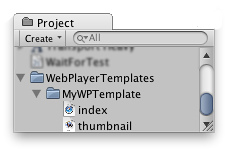

Using web player templates
When you build a webplayer project, Unity embeds the player in an HTML page so that it can be played in the browser. The default page is very simple, with just a white background and some minimal text. There are actually three different variations of this page which can be selected from the Player Settings inspector (menu: Edit > Project Settings > Player).

The built-in HTML pages are fine for testing and demonstrating a minimal player but for production purposes, it is often desirable to see the player hosted in the page where it will eventually be deployed. For example, if the Unity content interacts with other elements in the page via the external call interface then it must be tested with a page that provides those interacting elements. Unity allows you to supply your own pages to host the player by using webplayer templates.
Structure of a Webplayer Template
Custom templates are added to a project by creating a folder called "WebPlayerTemplates" in the Assets folder - the templates themselves are sub-folders within this folder. Each template folder contains an index.html or index.php file along with any other resources the page needs, such as images or stylesheets.

Once created, the template will appear among the options on the Player Settings inspector. (the name of the template will be the same as its folder). Optionally, the folder can contain a file named thumbnail.png, which should have dimensions of 128x128 pixels. The thumbnail image will be displayed in the inspector to hint at what the finished page will look like.
Template Tags
During the build process, Unity will look for special tag strings in the page text and replace them with values supplied by the editor. These include the name, onscreen dimensions and various other useful information about the player.
The tags are delimited by percent signs (%) in the page source. For example, if the product name is defined as "MyPlayer" in the Player settings:-
<title>%UNITY_WEB_NAME%</title>
...in the template's index file will be replaced with
<title>MyPlayer</title>
...in the host page generated for the build. The complete set of tags is given below:-
UNITY_WEB_NAME
Name of the webplayer.
UNITY_WIDTH
UNITY_HEIGHT
Onscreen width and height of the player in pixels.
UNITY_WEB_PATH
Local path to the webplayer file.
UNITY_UNITYOBJECT_LOCAL
A browser JavaScript file called UnityObject2.js is generally used to embed the player in the host page and provide part of the interaction between Unity and the host's JavaScript. This is normally supplied to a page by downloading from Unity's website. However, this requires an internet connection and causes problems if the page is to be deployed offline from the user's hard drive. This tag provides the local path to the UnityObject.js file, which will be generated if the Offline Deployment option is enabled in the Build Settings.
UNITY_UNITYOBJECT_URL
In the usual case where the page will download UnityObject2.js from the Unity's website (ie, the Offline Deployment option is disabled), this tag will provide the download URL.
UNITY_UNITYOBJECT_DEPENDENCIES
The UnityObject2.js have dependencies and this tag will be replaced with the needed dependencies for it to work properly.
UNITY_BETA_WARNING
If the webplayer has been built with a beta version of Unity, this tag will be replaced with a short warning message about the fact. Otherwise, it is replaced with nothing.
UNITY_CUSTOM_SOME_TAG
If you add a tag to the index file with the form UNITY_CUSTOM_XXX, then this tag will appear in the Player Settings when your template is selected. For example, if something like
<title>Unity Web Player | %UNITY_CUSTOM_MYTAG%</title>
...is added to the source, the Player Settings will look like this:-

The textbox next to the tag's name contains the text that the custom tag will be replaced with during the build.
Example
To illustrate the use of the template tags, here is the HTML source that Unity uses for its default webplayer build.
<!DOCTYPE html PUBLIC "-//W3C//DTD XHTML 1.0 Strict//EN" "http://www.w3.org/TR/xhtml1/DTD/xhtml1-strict.dtd">
<html xmlns="http://www.w3.org/1999/xhtml">
<head>
<meta http-equiv="Content-Type" content="text/html; charset=utf-8">
<title>Unity Web Player | %UNITY_WEB_NAME%</title>
%UNITY_UNITYOBJECT_DEPENDENCIES%
<script type="text/javascript">
<!--
var unityObjectUrl = "%UNITY_UNITYOBJECT_URL%";
if (document.location.protocol == 'https:')
unityObjectUrl = unityObjectUrl.replace("http://", "https://ssl-");
document.write('<script type="text\/javascript" src="' + unityObjectUrl + '"><\/script>');
-->
</script>
<script type="text/javascript">
<!--
jQuery(function() {
var config = {
width: %UNITY_WIDTH%,
height: %UNITY_HEIGHT%,
params: %UNITY_PLAYER_PARAMS%
};
var u = new UnityObject2(config);
var $missingScreen = jQuery("#unityPlayer").find(".missing");
var $brokenScreen = jQuery("#unityPlayer").find(".broken");
$missingScreen.hide();
$brokenScreen.hide();
u.observeProgress(function (progress) {
switch(progress.pluginStatus) {
case "broken":
$brokenScreen.find("a").click(function (e) {
e.stopPropagation();
e.preventDefault();
u.installPlugin();
return false;
});
$brokenScreen.show();
break;
case "missing":
$missingScreen.find("a").click(function (e) {
e.stopPropagation();
e.preventDefault();
u.installPlugin();
return false;
});
$missingScreen.show();
break;
case "installed":
$missingScreen.remove();
break;
case "first":
break;
}
});
u.initPlugin(jQuery("#unityPlayer")[0], "%UNITY_WEB_PATH%");
});
-->
</script>
<style type="text/css">
<!--
body {
font-family: Helvetica, Verdana, Arial, sans-serif;
background-color: white;
color: black;
text-align: center;
}
a:link, a:visited {
color: #000;
}
a:active, a:hover {
color: #666;
}
p.header {
font-size: small;
}
p.header span {
font-weight: bold;
}
p.footer {
font-size: x-small;
}
div.content {
margin: auto;
width: %UNITY_WIDTH%px;
}
div.broken,
div.missing {
margin: auto;
position: relative;
top: 50%;
width: 193px;
}
div.broken a,
div.missing a {
height: 63px;
position: relative;
top: -31px;
}
div.broken img,
div.missing img {
border-width: 0px;
}
div.broken {
display: none;
}
div#unityPlayer {
cursor: default;
height: %UNITY_HEIGHT%px;
width: %UNITY_WIDTH%px;
}
-->
</style>
</head>
<body>
<p class="header"><span>Unity Web Player | </span>%UNITY_WEB_NAME%</p>%UNITY_BETA_WARNING%
<div class="content">
<div id="unityPlayer">
<div class="missing">
<a href="http://unity3d.com/webplayer/" title="Unity Web Player. Install now!">
<img alt="Unity Web Player. Install now!" src="http://webplayer.unity3d.com/installation/getunity.png" width="193" height="63" />
</a>
</div>
<div class="broken">
<a href="http://unity3d.com/webplayer/" title="Unity Web Player. Install now! Restart your browser after install.">
<img alt="Unity Web Player. Install now! Restart your browser after install." src="http://webplayer.unity3d.com/installation/getunityrestart.png" width="193" height="63" />
</a>
</div>
</div>
</div>
<p class="footer">« created with <a href="http://unity3d.com/unity/" title="Go to unity3d.com">Unity</a> »</p>
</body>
</html>
Page last updated: 2012-11-15